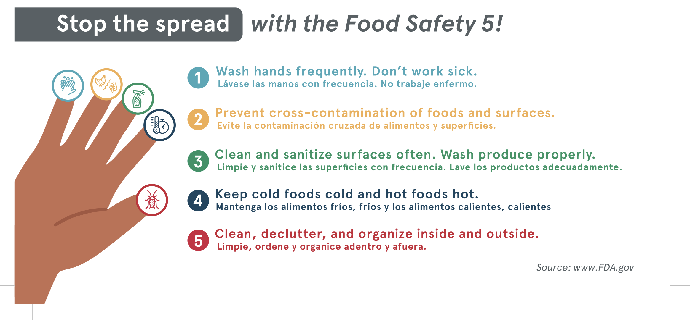

Owner/Operator
Chick-fil-A West Acres team
Systems and Standards
Leadership, development, and handbook resources in one place.
Preview onlySecure employee sign-in is not active. The handbook PDF is available for view-only preview; pathway content can be added when approved.
Team structure
Organizational Chart
- Front Of House Schedule
- Front Of House Systems
- Front Of House Hiring
- Front Of House Leadership Development
- Guest Experience
Assistant Director of Front of House
Jaylyn Lindley- Catering Relations
- Overall Hiring Processes
- Marketing Strategies
- Human Relations Management
Assistant Director of HR and Training
Name to be added- Back Of House Schedule
- Back Of House Systems
- Back Of House Hiring
- Back Of House Leadership Development
- Food Quality
Assistant Director of Back of House
Kassie CastenedaHover or click to view the full org chart
Store Standards
Pathway
The standard for Chick-fil-A procedures
Open Pathway ↗Chick-fil-A West Acres Handbook
The store standards and policies
Department Systems
FOH
Front of House Systems
The latest in Front of House systems
BOH
Back of House Systems
The latest in Back of House systems
Graphics
Tap any graphic to open it full size.
Front of House Graphics
Back of House Graphics
